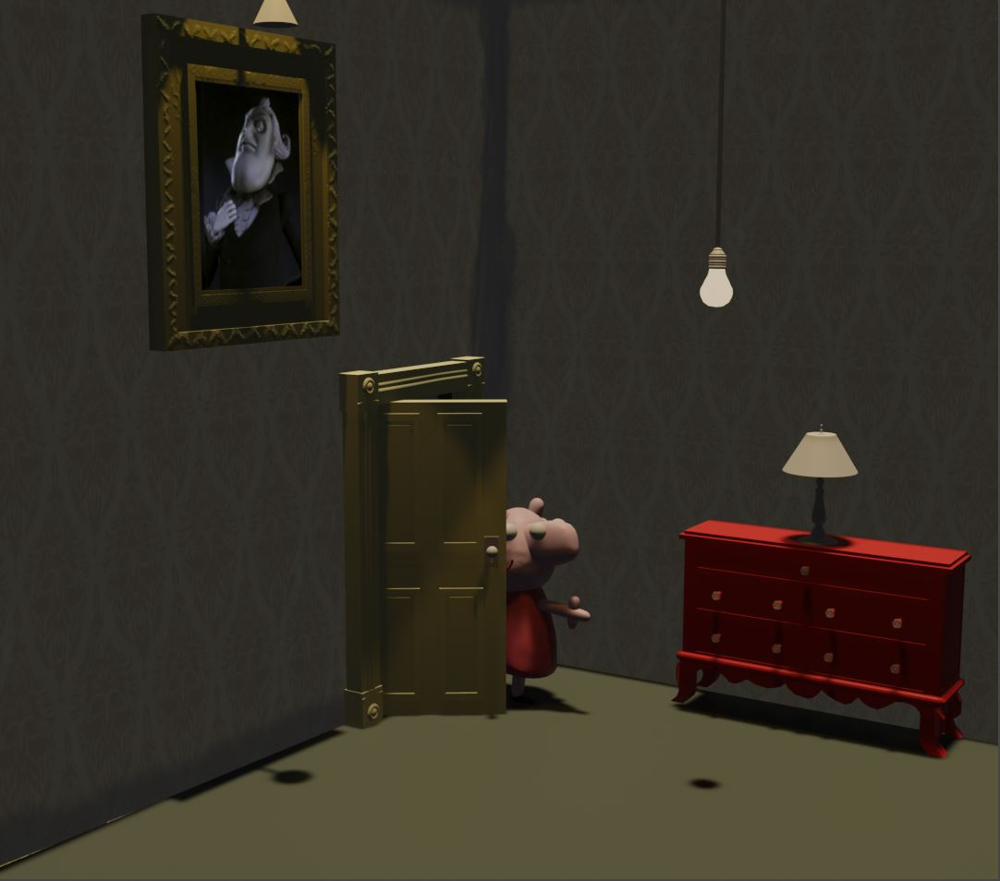
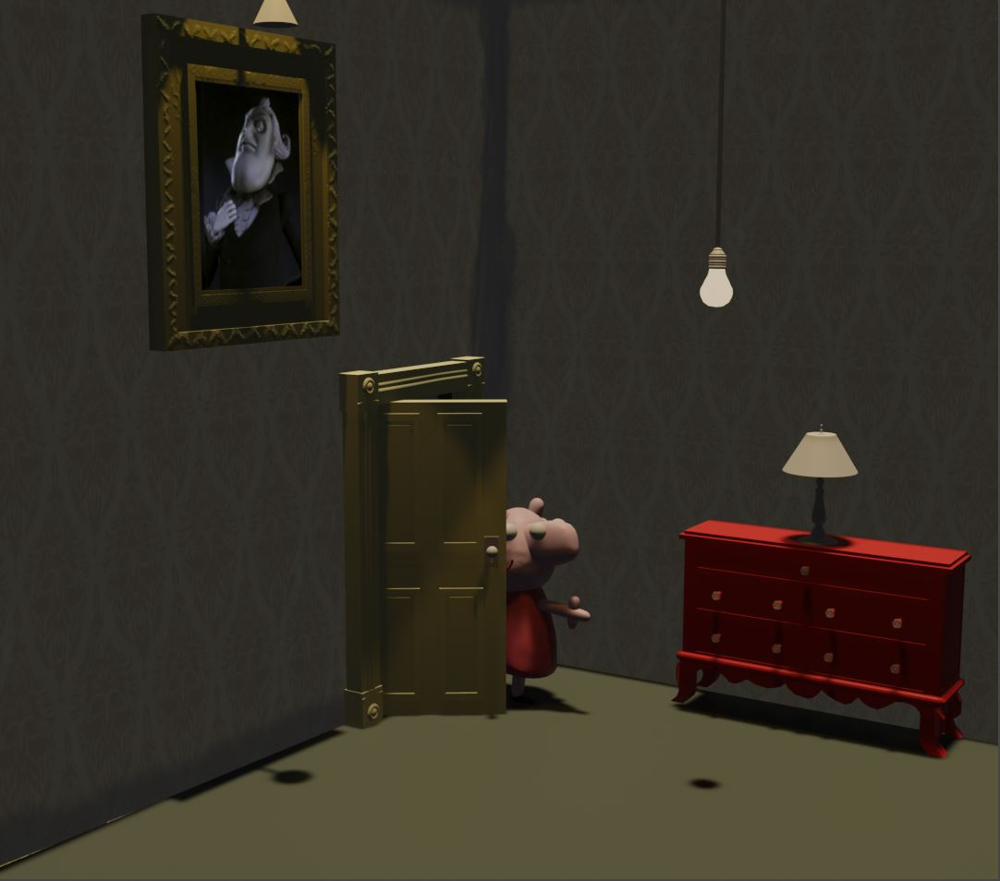
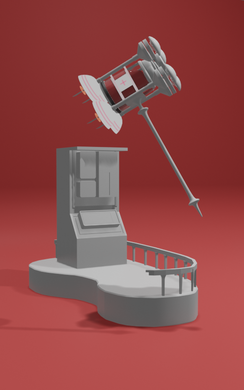

Chloe Kim
Chloe Kim is currently an undeclared student at UC Riverside.
She hopes to go on an art course and be in the game art industry. She has some skills and history in the 3D modeling program: Blender. She has not have had many jobs yet, but has been incorporated in many programs. In high school, she was an orientation leader and directed and looked after ten new freshman. She gave a tour, answered questions, and gave advice. She was also part of MILAL, a Christian program devoted to helping people children, teens, and adults with mental disabilities. There, she helped many different children and teens with their motor skills (cooking, crafts, etc.), social skills, and any personal issues. Chloe led many different sections in MILAL including cooking class and game class. She spent 8 hours in this program every Saturday. She was apart of this program for 4 years. This program also included a camping trip every year and many outdoor activities including walks, going to the playground, barbeques, etc. Because of these experiences, she has spent a lot of time building up leadership skills. Chloe is also a Korean-American. She also has skills in writing. In high school, she was a part of the AP Lang class. She also registered for a writing competition scholarship started by a real estate group. She was one of the top winners for the scholarship.
In her spare time, she enjoys many different hobbies. Some examples would be badminton, bullet journaling, drawing, Rubik's cubing, and free skating. Her best time in speed cubing is fifty two seconds. Free skating is kind of up and coming. It looks similar to a skateboard cut into two squares. There are no straps and skaters ride sideways. The way to gain speed or any kind of momentum In her youth, she did Tae Kwon Do for about 4 years and Track & Field for 5 years. She also learned piano for three years. In high school Track & Field, she mostly partook in shorter distance running and hurdles. She did 300m sprint, 100m sprint, 4 by 4 relay, 300m hurdles, and 100m hurdles. In middle school, she did many jumping activities in Track and Field. This includes high jump and long jump. She also did short distance running in middle school. She also enjoys writing and has enjoyed it throughout her life since middle school. She has written several stories, chapters, and poems over the years. She has gotten a significant interest toward poetry recently. Chloe also enjoys the occasional baking and cooking. She turned many cupcakes into muffins when she was younger. She like cooking steak, pasta sauce, and many different Korean dishes. Her favourites are the birthday seaweed soup, Miyuk Gook, and kimchi pancakes, kimchi buchingae.
Experience
Track and Field
• spent time working together and coordinating in groups
• attended and performed in several events
• Experience with short-mid distance running, hurdles, and relays
MILAL
• Responsible for several different children, teens, and adutls with mental disabilities
• Supported participants during their time and led groups
4K Dance Team
• coordinated dances with groups of different people
• performed in several different events
Education
University of California Riverside
 
